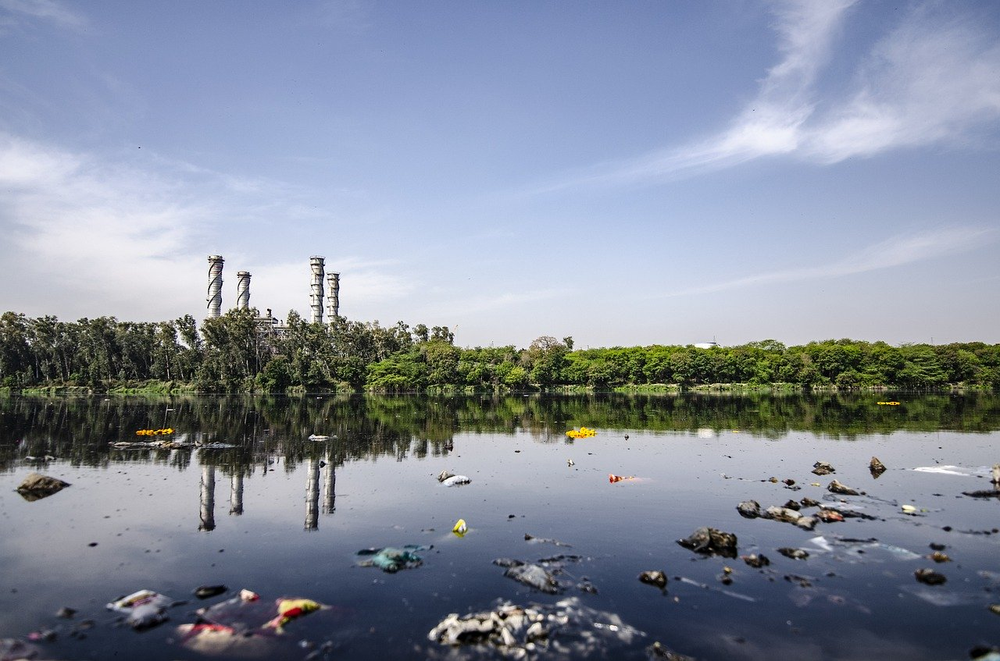
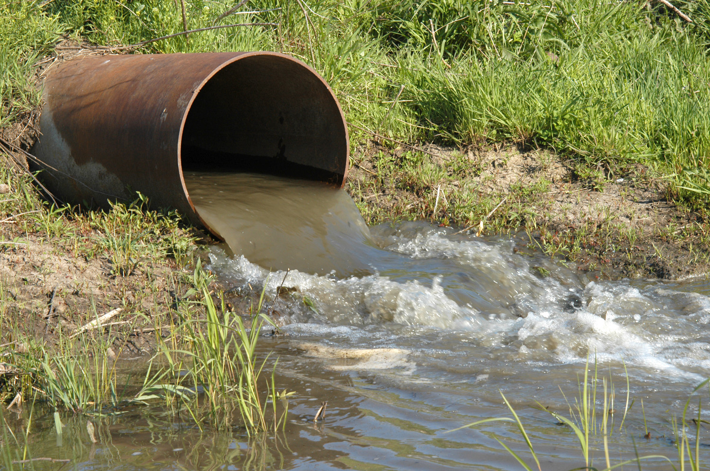

"Verde, no queda mucho donde verte"
Peligros de la contaminación ambiental



Queridos presentes, hoy quiero hablarles de un enemigo silencioso que afecta nuestra salud, nuestro entorno y nuestro futuro: la contaminación. Aunque muchas veces pasa desapercibida, sus consecuencias son profundas y nos alcanzan a todos, sin importar edad, lugar o condición. La contaminación del aire, del agua y del suelo no es solo un problema ambiental, es un problema humano. Respirar aire contaminado aumenta el riesgo de enfermedades respiratorias y cardiovasculares. Beber agua contaminada puede provocar graves problemas de salud. Y los suelos contaminados afectan la producción de alimentos, poniendo en riesgo nuestra seguridad alimentaria. Además, la contaminación destruye ecosistemas enteros. Los ríos pierden su vida, los mares se llenan de plásticos, y los animales sufren las consecuencias de nuestros desechos. Cada bolsa, cada humo, cada residuo que generamos deja una huella que se acumula y que compromete la biodiversidad del planeta. No podemos olvidar tampoco el impacto social y económico: comunidades enteras se ven obligadas a migrar porque sus tierras ya no son fértiles, porque sus aguas ya no son seguras, porque sus cielos ya no son respirables. La contaminación no distingue fronteras, y lo que hoy parece un problema lejano, mañana puede estar en nuestra propia casa. La contaminación es mala porque nos roba lo más valioso: la salud, la naturaleza y el futuro. Pero también es un problema que podemos enfrentar. Cada acción cuenta: reducir, reciclar, reutilizar, exigir políticas responsables y comprometernos con un estilo de vida más sostenible. No olvidemos que el planeta no es una herencia de nuestros padres, sino un préstamo de nuestros hijos. Y ellos merecen recibir un mundo limpio, sano y lleno de vida.